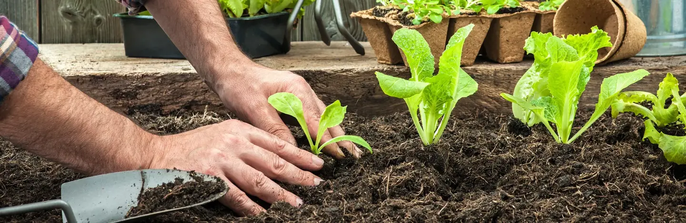
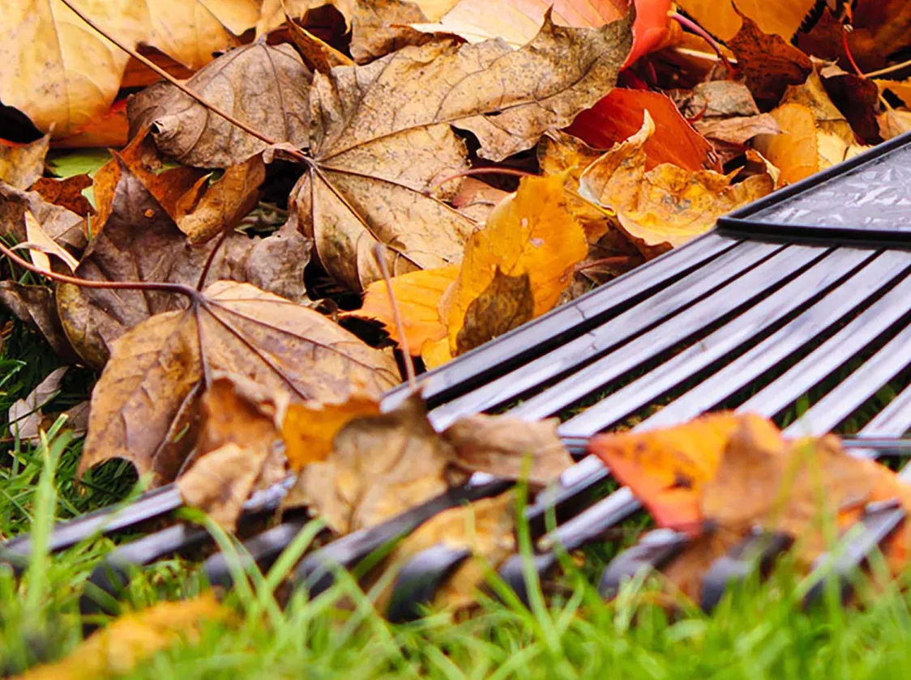

DOBRODOŠLI V SVOJEM ZELENEM KOTIČKU
ZA VRT,
POLN ŽIVLJENJA.
Od prvega semena do polne košare.
Naj vaš vrt raste v pravem
ritmu.
Majhni začetki. Veliko veselja.
VSE ZA VAŠ VRT. NA ENEM MESTU.
VRT ALI BALKON?
ZAČNIMO PRI VAS.
Vaš prostor. Vaše rastline.
Osebni načrt v štirih preprostih
korakih.
Pripravljamo vaš načrtovalnik …
JESEN JE TU.
VRT ŠE VEDNO ŽIVI.
Dnevi so krajši, košare pa še vedno polne. Izkoristite prijetno vreme za jesensko setev, sajenje česna in pripravo gredic na zimo.
Kaj lahko naredim ta mesec
VAŠ MESEČNI
SETVENI KOLEDAR
Izberite mesec in odkrijte, kaj sejati, saditi in pobirati.
Okvirni termini za osrednjo Slovenijo. Prilagodite jih vremenu, nadmorski višini, sorti in navodilom na semenski vrečki.
SPOZNAJTE SVOJE RASTLINE
Majhen vodnik za velike in male vrtnarje.
Izberite rastlino in
preberite osnove gojenja.
MALO NAVDIHA.
VELIKO ZELENEGA.
Znanje, ki raste skupaj z vami.
MOJ VRT
Najljubše rastline shranite s srčkom. Vaš izbor vas bo tu čakal tudi naslednjič.
Izbor se shrani samo v ta brskalnik. Račun in prijava nista potrebna.